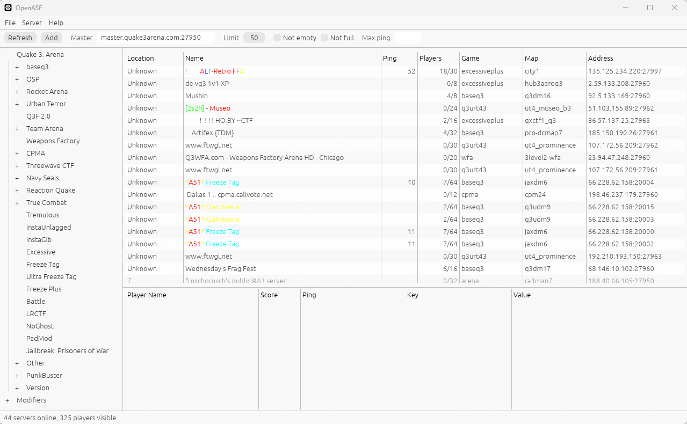

OpenASE
The classic game server browser, reborn. Find live Quake 3 servers, see who is playing and read their names in full color, the way it looked in 2004.

Features
What made ASE great, rebuilt from scratch
OpenASE keeps the familiar three-pane layout: filters on the left, servers on top, players and server rules below. The code is new and contains nothing from the original Yahoo program.
Master server discovery
Pulls full server lists from Quake 3 masters, including lists split over many UDP packets.
Fast parallel scan
The Rust version queries 16 servers at once, so hundreds of servers come in within seconds.
Full color names
Renders ^1 indexed colors, extended ^A codes and ^xRRGGBB hex colors for servers and players.
Players and server rules
Click a server to see every player's score and ping, plus all of its cvars.
Quick filters
Hide empty or full servers, cap the ping, or filter by reported country. OpenASE never guesses a location from an IP address.
Game detection
Finds installed games through the Windows registry or a deep search, and lets you set paths and player names per game.
Color codes
Names the way servers meant them
Quake 3 servers style their names with caret codes. A plain browser shows the raw string; OpenASE draws the colors.
Install
Run it from source
Prebuilt downloads are coming. Until then, building takes a minute.
filters.txt if one sits next to OpenASE. Without it, OpenASE still browses Quake 3 servers. A built-in game list is on the roadmap.Roadmap
Where it's going
The goal: one browser for the old-school online games that still have players.
- DoneQuake 3 browsingMaster discovery, server status, players, color names, filters, Python and Rust versions.
- NextThe id Tech 3 familyUrban Terror, OpenArena, Wolfenstein: Enemy Territory, Call of Duty 1 and 2.
- NextBuilt-in game list and real pingNo dependency on original ASE files, and round-trip time measured per server.
- NextDownloadsSigned Windows builds on GitHub Releases.
- LaterFavorites, buddies and one-click joinSee when friends are online and launch the game straight onto their server.